How an inbound Clerk webhook becomes durable, idempotent, retryable work. The worker Cloud Run service owns this whole path; the API is not involved.
Top to bottom is one webhook's journey. The shared ingestion path is source-agnostic once the signature is verified; the fan-out below it is where an event type is dispatched to its own queue and handler.
| store | A MongoDB write. webhook_events is the immutable audit log (raw payload, keyed by
source + sourceEventId); webhook_jobs is the per-job status record. |
| queue | A Cloud Tasks queue — one per job kind, so retry/backoff policy is tuned independently. Locally an in-process queue stands in (no Cloud Tasks emulator exists). |
| worker | A registered job handler, invoked when Cloud Tasks calls /tasks/{jobType} back. Every
handler is idempotent — at-least-once delivery means the same event can arrive twice. |
| verify first | a bad signature persists nothing and returns 400 — the source is named in the path (/ingest/clerk) so the right verifier is chosen before anything is trusted. |
| record before act | the raw event is written before any work is scheduled, so a later failure can be replayed without asking Clerk to redeliver. |
| idempotent by key | events dedup on (source, sourceEventId), jobs on (source, sourceEventId, jobType). A provider redelivery is absorbed — never double-applied, never reset once succeeded. |
| status = retry contract | the worker answers Cloud Tasks with an HTTP status: 200 = done (incl. permanent/poison outcomes), 500 = a handler threw, so retry per the queue's policy. |

Diagram source: docs/webhook.mmd · vector: docs/webhook.svg
Conceptual flow, not a class map. Boxes name what happens (“Verify svix signature”), not the
files that do it (ClerkWebhookVerifier, IngestService, JobRunner).
seed org DB is currently a stub — real seeding lands with the SeedService extraction.